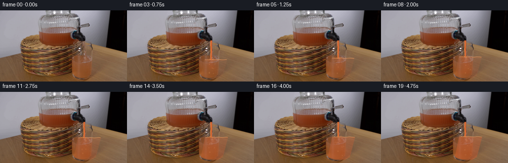
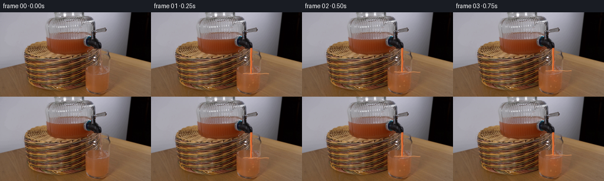
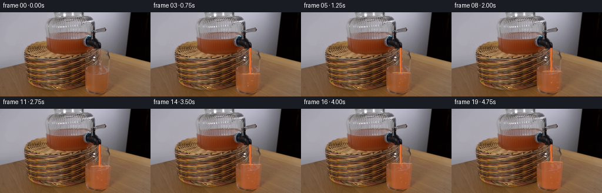
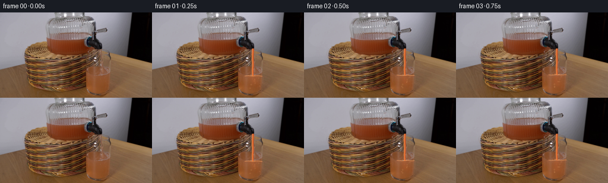

CODING AGENTS AS PIXEL WORLD MODELS
traex/GPT-5.6-Sol · 0070
点击播放 · 原生 RGB 像素
逐轮保存的候选
回放视频、检查图与代码变化。
每份候选均可单独播放。实际图片检查记录在下方工具轨迹中。
候选 01播放与检查图
点击播放 · 原生 RGB 像素


展开代码变化
--- 上一保存版本
+++ 本次保存版本
@@ -0,0 +1,165 @@
+"""Generate a locked-off demonstration of grapefruit juice pouring into water.
+
+The supplied photograph remains the sole source for the scene. Animation is
+limited to the transparent liquid, falling jet, surface ripples and tiny air
+bubbles inside the already-photographed tumbler.
+"""
+from pathlib import Path
+import numpy as np
+import cv2
+from PIL import Image
+import artifact_io
+
+CASE_DIR = Path(__file__).resolve().parent
+H, W, N = 144, 256, 20
+SS = 4
+
+
+def aa_polygon(points):
+ """Antialiased coverage mask for a polygon in image coordinates."""
+ big = np.zeros((H * SS, W * SS), np.uint8)
+ pts = np.rint(np.asarray(points, np.float32) * SS).astype(np.int32)
+ cv2.fillPoly(big, [pts], 255, lineType=cv2.LINE_AA)
+ return cv2.resize(big, (W, H), interpolation=cv2.INTER_AREA).astype(np.float32) / 255.0
+
+
+def aa_line(points, width):
+ big = np.zeros((H * SS, W * SS), np.uint8)
+ pts = np.rint(np.asarray(points, np.float32) * SS).astype(np.int32)
+ cv2.polylines(big, [pts], False, 255, max(1, round(width * SS)), cv2.LINE_AA)
+ return cv2.resize(big, (W, H), interpolation=cv2.INTER_AREA).astype(np.float32) / 255.0
+
+
+def aa_circle(x, y, radius, thickness=-1):
+ big = np.zeros((H * SS, W * SS), np.uint8)
+ cv2.circle(big, (round(x*SS), round(y*SS)), max(1, round(radius*SS)), 255,
+ -1 if thickness < 0 else max(1, round(thickness*SS)), cv2.LINE_AA)
+ return cv2.resize(big, (W, H), interpolation=cv2.INTER_AREA).astype(np.float32) / 255.0
+
+
+def blend(im, color, alpha):
+ """Alpha composite a constant RGB color into float RGB image."""
+ a = np.clip(alpha, 0, 1)[..., None]
+ im[:] = im * (1.0 - a) + np.asarray(color, np.float32) * a
+
+
+# Inner face of the photographed drinking glass. A slight inset leaves its
+# real highlights, rim, and outline completely visible.
+glass_inner = aa_polygon([(160.0, 78.2), (207.0, 78.2), (193.0, 131.5),
+ (184.2, 137.0), (164.0, 137.0), (149.0, 131.6)])
+yy, xx = np.mgrid[0:H, 0:W].astype(np.float32)
+
+
+def glass_sides_at(y):
+ # Linear approximation to the converging inner walls.
+ q = np.clip((y - 78.0) / 59.0, 0.0, 1.0)
+ return 160.0 - 11.0*q, 207.0 - 14.0*q
+
+
+def make_frame(base, idx):
+ if idx == 0:
+ return base.copy()
+
+ # Constant-rate filling; the very slight easing is the establishment of
+ # flow during the first quarter second rather than a camera speed change.
+ p = idx / (N - 1)
+ fill = 1.0 - np.exp(-5.0*p)
+ fill /= 1.0 - np.exp(-5.0)
+ surface_y = 108.0 - 17.2 * (0.18*p + 0.82*fill)
+ phase = idx * 1.73
+
+ # The free surface is level overall. Two damped capillary ripples are
+ # strongest near the incoming jet at x=170.
+ wave = (0.52*np.sin((xx-154.0)*0.37 + phase) +
+ 0.25*np.sin((xx-149.0)*0.73 - phase*1.31))
+ wave *= (0.30 + 0.70*np.exp(-np.abs(xx-170.0)/18.0))
+ liquid = glass_inner * np.clip((yy - (surface_y + wave) + 0.75) / 1.5, 0, 1)
+
+ out = base.astype(np.float32)
+
+ # Clear water is faintly refractive. It remains visible below the orange
+ # mixing plume at the beginning and is gradually displaced/tinted.
+ blend(out, (176, 170, 157), liquid * (0.028 + 0.012*np.sin(yy*0.33 + phase)))
+
+ # Analytic turbulent concentration field. Fresh juice enters at 170 px,
+ # billows downward, and then diffuses throughout the water over five sec.
+ depth = np.maximum(yy - surface_y, 0)
+ plume_center = 170.2 + 2.0*np.sin(depth*0.20 - phase*0.62) * (1-p*0.55)
+ plume_width = 2.6 + depth*0.22 + 7.0*p
+ plume = np.exp(-((xx-plume_center)/plume_width)**2)
+ descending = np.exp(-np.maximum(depth - (7.0 + 58.0*p), 0)/4.0)
+ # Horizontal eddies produce smooth, organic but temporally coherent swirls.
+ eddy = 0.5 + 0.5*np.sin(xx*0.22 + yy*0.17 - phase*0.72)
+ concentration = (0.10 + 0.74*p + (0.74-0.35*p)*plume*descending +
+ 0.11*p*(1-p)*eddy)
+ concentration = np.clip(concentration, 0, 1) * liquid
+
+ # Pink-orange grapefruit color, transparent enough to retain the table and
+ # glass refraction already present in the source photograph.
+ blend(out, (220, 92, 43), concentration * (0.20 + 0.19*p))
+ # A brighter, newly aerated band immediately beneath the impact surface.
+ near_surface = liquid * np.exp(-depth/4.5) * np.exp(-((xx-170)/15)**2)
+ blend(out, (242, 135, 73), near_surface * (0.12 + 0.05*np.sin(phase)**2))
+
+ # Fine horizontal meniscus. It is clipped to the actual interior walls.
+ lx, rx = glass_sides_at(surface_y)
+ xs = np.linspace(lx+1, rx-1, 42)
+ ys = surface_y + 0.35*np.sin((xs-154)*0.39 + phase)
+ meniscus = aa_line(np.c_[xs, ys], 0.72) * glass_inner
+ blend(out, (245, 166, 102), meniscus * 0.58)
+ # dark underside gives the surface thickness without a graphic-looking bar
+ under = aa_line(np.c_[xs, ys+0.9], 0.45) * glass_inner
+ blend(out, (142, 58, 28), under * 0.24)
+
+ # Falling stream emerging from the photographed tap. A gently wavering,
+ # narrowing polygon is used rather than a rigid vertical line.
+ y0, y1 = 61.0, surface_y-0.35
+ sy = np.linspace(y0, y1, max(8, int(y1-y0)+1))
+ center = 169.6 + 0.22*np.sin((sy-y0)*0.27 + phase*0.45)
+ halfw = 1.65 - 0.40*(sy-y0)/max(y1-y0, 1)
+ jet_poly = np.c_[np.r_[center-halfw, (center+halfw)[::-1]],
+ np.r_[sy, sy[::-1]]]
+ jet = aa_polygon(jet_poly)
+ # Orange transmitted light plus a narrow specular strand on the left.
+ blend(out, (205, 73, 26), jet * 0.80)
+ jet_core = aa_line(np.c_[center+0.25, sy], 1.15)
+ blend(out, (235, 108, 43), jet_core * 0.60)
+ jet_glint = aa_line(np.c_[center-0.78, sy], 0.42)
+ blend(out, (255, 184, 104), jet_glint * 0.70)
+
+ # Small impact crown and droplets. Their low amplitude is appropriate for
+ # a narrow dispenser stream and avoids introducing any new scene objects.
+ splash_amp = 0.75 + 0.25*np.sin(phase*1.9)
+ for k, (dx, lift, rad) in enumerate([(-4.5, 2.2, .62), (4.8, 2.8, .58),
+ (-7.0, 1.0, .42), (6.7, 1.3, .45)]):
+ wob = np.sin(phase*1.55 + k*1.7)
+ m = aa_circle(170+dx+0.45*wob, surface_y-lift*splash_amp, rad)
+ # clip broad excursions to the opening region, not the liquid body
+ m *= ((xx > lx) & (xx < rx) & (yy > surface_y-5.2) & (yy < surface_y+1.0))
+ blend(out, (239, 128, 62), m * 0.68)
+ crown_l = aa_line([(169.5, surface_y), (166.9, surface_y-1.4*splash_amp)], .55)
+ crown_r = aa_line([(170.5, surface_y), (174.0, surface_y-1.2*splash_amp)], .55)
+ blend(out, (246, 148, 76), (crown_l+crown_r)*0.62)
+
+ # A few entrained bubbles rise inside the juice. They are sub-pixel to one
+ # pixel in size and remain clipped to the tumbler's liquid.
+ for k in range(7):
+ bx = 164.0 + ((k*7.3 + 2.1*np.sin(phase*.37+k)) % 18.0)
+ by = 129.0 - ((idx*1.15 + k*8.7) % max(8.0, 127-surface_y))
+ if by > surface_y + 2.2:
+ ring = aa_circle(bx, by, 0.72 if k % 3 else 0.92, .35) * liquid
+ blend(out, (248, 178, 112), ring * (0.36 + 0.08*(k%2)))
+
+ return np.clip(np.rint(out), 0, 255).astype(np.uint8)
+
+
+def main():
+ base = np.asarray(Image.open(CASE_DIR / "first_frame.png").convert("RGB"), dtype=np.uint8)
+ assert base.shape == (H, W, 3)
+ frames = np.stack([make_frame(base, i) for i in range(N)], axis=0)
+ assert np.array_equal(frames[0], base)
+ artifact_io.save(frames, CASE_DIR)
+
+
+if __name__ == "__main__":
+ main()
候选 02播放与检查图
点击播放 · 原生 RGB 像素


展开代码变化
--- 上一保存版本
+++ 本次保存版本
@@ -45,15 +45,15 @@
# Inner face of the photographed drinking glass. A slight inset leaves its
# real highlights, rim, and outline completely visible.
-glass_inner = aa_polygon([(160.0, 78.2), (207.0, 78.2), (193.0, 131.5),
- (184.2, 137.0), (164.0, 137.0), (149.0, 131.6)])
+glass_inner = aa_polygon([(151.5, 77.0), (191.5, 77.0), (185.0, 134.2),
+ (181.8, 136.7), (159.0, 136.7), (154.8, 134.0)])
yy, xx = np.mgrid[0:H, 0:W].astype(np.float32)
def glass_sides_at(y):
# Linear approximation to the converging inner walls.
- q = np.clip((y - 78.0) / 59.0, 0.0, 1.0)
- return 160.0 - 11.0*q, 207.0 - 14.0*q
+ q = np.clip((y - 77.0) / 59.7, 0.0, 1.0)
+ return 151.5 + 7.5*q, 191.5 - 9.7*q
def make_frame(base, idx):
@@ -63,9 +63,8 @@
# Constant-rate filling; the very slight easing is the establishment of
# flow during the first quarter second rather than a camera speed change.
p = idx / (N - 1)
- fill = 1.0 - np.exp(-5.0*p)
- fill /= 1.0 - np.exp(-5.0)
- surface_y = 108.0 - 17.2 * (0.18*p + 0.82*fill)
+ # A cylindrical drinking glass fills nearly linearly under steady flow.
+ surface_y = 108.0 - 17.2*p
phase = idx * 1.73
# The free surface is level overall. Two damped capillary ripples are
可观测工具轨迹
实际执行的命令与返回图片。
命令 1exit 0
/bin/bash -lc "cat prompt.txt && printf '\\n---RULES---\\n' && cat GENERATION_RULES.md"
命令 2exit 1
/bin/bash -lc "find . -maxdepth 2 -type f -printf '%p\\n' | sort && printf '\\nTOOLS\\n' && command -v ffmpeg && command -v python3"
命令 3exit 0
/bin/bash -lc "python3 - <<'PY'
from PIL import Image
import numpy as np
im=np.array(Image.open('first_frame.png').convert('RGB'))
print(im.shape,im.dtype,im.min((0,1)),im.max((0,1)),im.mean((0,1)))
# grid median/luma/color 16x9 blocks
for y in range(0,144,8):
row=[]
for x in range(0,256,8):
a=im[y:y+8,x:x+8]; c=np.median(a.reshape(-1,3),0).astype(int); lum=c@[.2126,.7152,.0722]
chars=' .:-=+*#%@'; row.append(chars[min(9,int(lum/256*10))])
print(''.join(row))
PY"命令 4exit 0
/bin/bash -lc "python3 - <<'PY'
import cv2, numpy as np
from PIL import Image
im=cv2.imread('first_frame.png'); print('cv',cv2.__version__)
# kmeans colors RGB and centers spatial bounding for assigned pixels
rgb=im[:,:,::-1]
Z=rgb.reshape(-1,3).astype(np.float32)
_,lab,cent=cv2.kmeans(Z,12,None,(cv2.TERM_CRITERIA_EPS+cv2.TERM_CRITERIA_MAX_ITER,30,.5),8,cv2.KMEANS_PP_CENTERS)
lab=lab.ravel()
for i,c in sorted(enumerate(cent),key=lambda x:x[1].mean()):
yy,xx=np.where(lab.reshape(144,256)==i)
print(i,np.rint(c).astype(int),len(xx),'x',np.percentile(xx,[5,50,95]).round(1),'y',np.percentile(yy,[5,50,95]).round(1))
# output patch grid avg exact
for y in range(0,144,12):
print('Y',y, ['%02x%02x%02x'%tuple(np.mean(rgb[y:y+12,x:x+16],axis=(0,1)).astype(int)) for x in range(0,256,16)])
PY"命令 5exit 0
/bin/bash -lc "python3 - <<'PY'
import cv2,numpy as np
im=cv2.imread('first_frame.png'); g=cv2.cvtColor(im,cv2.COLOR_BGR2GRAY)
for typ,a in [('gray',g),('edge',cv2.Canny(g,50,120))]:
print('\\n',typ)
h,w=a.shape
for y in range(0,h,4):
s=''
for x in range(0,w,4):
z=a[y:y+4,x:x+4]
if typ=='gray':
v=np.mean(z); chars=' .,:;irsXA253hMHGS#9B&@'; s+=chars[min(len(chars)-1,int(v/256*len(chars)))]
else:
v=np.mean(z)/255; chars=' .:-=+*#%@'; s+=chars[min(9,int(v*22))]
print(s)
PY"命令 6exit 0
/bin/bash -lc "python3 - <<'PY'
import cv2,numpy as np
im=cv2.imread('first_frame.png'); gray=cv2.cvtColor(im,cv2.COLOR_BGR2GRAY)
lines=cv2.HoughLinesP(cv2.Canny(gray,30,100),1,np.pi/180,threshold=15,minLineLength=8,maxLineGap=3)
for q in sorted(lines[:,0].tolist(),key=lambda z: -((z[2]-z[0])**2+(z[3]-z[1])**2))[:80]: print(q)
PY"命令 7exit 0
/bin/bash -lc "python3 - <<'PY'
from PIL import Image
import numpy as np
im=np.array(Image.open('first_frame.png'))[:,:,:3]
pts=[(x,y) for y in [0,10,20,30,40,50,60,70,80,90,100,110,120,130,143] for x in [0,20,40,60,80,90,100,110,120,130,140,150,160,170,180,190,200,210,220,230,240,255]]
for y in [0,10,20,30,40,50,60,70,80,90,100,110,120,130,143]:
print('\\ny=',y)
for x in [0,20,40,60,80,90,100,110,120,130,140,150,160,170,180,190,200,210,220,230,240,255]: print(f'{x}:{tuple(im[y,x])}',end=' ')
PY"命令 8exit 0
/bin/bash -lc "python3 - <<'PY'
import cv2,numpy as np
im=cv2.imread('first_frame.png')[:,:,::-1]
# handcrafted categories: black k, gray G, reddish juice J, wood W, highlights H
for y in range(30,144,3):
s=''
for x in range(30,226,3):
c=np.mean(im[y:y+3,x:x+3],(0,1)); r,g,b=c; mx=max(c); mn=min(c)
if mx<20:q='K'
elif mx<45:q='k'
elif abs(r-g)<10 and abs(g-b)<12:q='G' if mx>100 else 'g'
elif r>g*1.8 and r>b*2.4:q='O'
elif r>g*1.35 and r>b*1.6:q='o'
elif r>g*1.15 and r>b*1.35:q='w'
elif max(c)-min(c)<18:q='S'
elif b>r:q='B'
else:q='.'
s+=q
print(f'{y:03}',s)
PY"命令 9exit 0
/bin/bash -lc "python3 - <<'PY'
import cv2,numpy as np
im=cv2.imread('first_frame.png')[:,:,::-1]
# hue categorize at 2x2 x120:215 y45:135
for y in range(40,136,2):
s=''
for x in range(115,221,2):
c=np.mean(im[y:y+2,x:x+2],(0,1)); r,g,b=c; l=np.mean(c)
if max(c)<15:q=' '
elif max(c)<35:q='K'
elif max(c)<60:q='k'
elif max(c)-min(c)<12:q='#' if l>130 else ('=' if l>80 else '-')
elif b>r*1.05:q='B'
elif r>g*2 and r>b*3:q='R'
elif r>g*1.6 and r>b*2:q='O'
elif r>g*1.3 and r>b*1.5:q='o'
elif r>g*1.12 and r>b*1.25:q='w'
else:q='.'
s+=q
print(f'{y:03} {s}')
PY"命令 10exit 0
/bin/bash -lc "python3 - <<'PY'
import cv2,numpy as np
im=cv2.imread('first_frame.png'); g=cv2.cvtColor(im,cv2.COLOR_BGR2GRAY)
for lo,hi in [(20,60),(40,100),(80,160)]:
e=cv2.Canny(g,lo,hi); cs,_=cv2.findContours(e,cv2.RETR_LIST,cv2.CHAIN_APPROX_SIMPLE)
print('\\n',lo)
for c in sorted(cs,key=cv2.contourArea,reverse=True)[:30]:
x,y,w,h=cv2.boundingRect(c); ar=cv2.contourArea(c); print(round(ar,1),(x,y,w,h))
PY"命令 11exit 0
/bin/bash -lc "python3 - <<'PY'
import cv2,numpy as np
im=cv2.imread('first_frame.png'); g=cv2.cvtColor(im,cv2.COLOR_BGR2GRAY); e=cv2.Canny(g,35,90)
# downsample 2x2, show edge if any; coords labels
for y in range(30,144,2):
s=''
for x in range(120,226,2):
z=e[y:y+2,x:x+2]; n=np.count_nonzero(z)
s += ' ' if n==0 else ('.' if n==1 else ('+' if n==2 else '#'))
print(f'{y:03} {s}')
PY"命令 12exit 0
/bin/bash -lc "python3 - <<'PY'
from PIL import Image
import numpy as np
im=np.array(Image.open('first_frame.png'))[:,:,:3]
for y in range(55,113,2):
print('\\ny',y)
for x in range(145,191,2):
r,g,b=im[y,x]; print(f'{x}:{r:02x}{g:02x}{b:02x}',end=' ')
PY"命令 13exit 0
/bin/bash -lc "python3 - <<'PY'
import cv2,numpy as np
im=cv2.imread('first_frame.png'); g=cv2.cvtColor(im,cv2.COLOR_BGR2GRAY); e=cv2.Canny(g,35,90)
for y in range(55,144):
xs=np.where(e[y,130:211]>0)[0]+130
print(y, ','.join(map(str,xs.tolist())))
PY"命令 14exit 0
/bin/bash -lc "python3 - <<'PY'
import cv2,numpy as np
im=cv2.imread('first_frame.png')[:,:,::-1]
chars='@%#*+=-:. '
for y in range(35,141):
s=''
for x in range(135,221):
r,g,b=im[y,x]; l=.21*r+.72*g+.07*b
s+=chars[min(9,int(l/256*10))]
print(f'{y:03} {s}')
PY"命令 15exit 0
/bin/bash -lc "sed -n '1,240p' artifact_io.py"
命令 16exit 0
/bin/bash -lc "cat > generate.py <<'PY'
\"\"\"Generate a locked-off demonstration of grapefruit juice pouring into water.
The supplied photograph remains the sole source for the scene. Animation is
limited to the transparent liquid, falling jet, surface ripples and tiny air
bubbles inside the already-photographed tumbler.
\"\"\"
from pathlib import Path
import numpy as np
import cv2
from PIL import Image
import artifact_io
CASE_DIR = Path(__file__).resolve().parent
H, W, N = 144, 256, 20
SS = 4
def aa_polygon(points):
\"\"\"Antialiased coverage mask for a polygon in image coordinates.\"\"\"
big = np.zeros((H * SS, W * SS), np.uint8)
pts = np.rint(np.asarray(points, np.float32) * SS).astype(np.int32)
cv2.fillPoly(big, [pts], 255, lineType=cv2.LINE_AA)
return cv2.resize(big, (W, H), interpolation=cv2.INTER_AREA).astype(np.float32) / 255.0
def aa_line(points, width):
big = np.zeros((H * SS, W * SS), np.uint8)
pts = np.rint(np.asarray(points, np.float32) * SS).astype(np.int32)
cv2.polylines(big, [pts], False, 255, max(1, round(width * SS)), cv2.LINE_AA)
return cv2.resize(big, (W, H), interpolation=cv2.INTER_AREA).astype(np.float32) / 255.0
def aa_circle(x, y, radius, thickness=-1):
big = np.zeros((H * SS, W * SS), np.uint8)
cv2.circle(big, (round(x*SS), round(y*SS)), max(1, round(radius*SS)), 255,
-1 if thickness < 0 else max(1, round(thickness*SS)), cv2.LINE_AA)
return cv2.resize(big, (W, H), interpolation=cv2.INTER_AREA).astype(np.float32) / 255.0
def blend(im, color, alpha):
\"\"\"Alpha composite a constant RGB color into float RGB image.\"\"\"
a = np.clip(alpha, 0, 1)[..., None]
im[:] = im * (1.0 - a) + np.asarray(color, np.float32) * a
# Inner face of the photographed drinking glass. A slight inset leaves its
# real highlights, rim, and outline completely visible.
glass_inner = aa_polygon([(160.0, 78.2), (207.0, 78.2), (193.0, 131.5),
(184.2, 137.0), (164.0, 137.0), (149.0, 131.6)])
yy, xx = np.mgrid[0:H, 0:W].astype(np.float32)
def glass_sides_at(y):
# Linear approximation to the converging inner walls.
q = np.clip((y - 78.0) / 59.0, 0.0, 1.0)
return 160.0 - 11.0*q, 207.0 - 14.0*q
def make_frame(base, idx):
if idx == 0:
return base.copy()
# Constant-rate filling; the very slight easing is the establishment of
# flow during the first quarter second rather than a camera speed change.
p = idx / (N - 1)
fill = 1.0 - np.exp(-5.0*p)
fill /= 1.0 - np.exp(-5.0)
surface_y = 108.0 - 17.2 * (0.18*p + 0.82*fill)
phase = idx * 1.73
# The free surface is level overall. Two damped capillary ripples are
# strongest near the incoming jet at x=170.
wave = (0.52*np.sin((xx-154.0)*0.37 + phase) +
0.25*np.sin((xx-149.0)*0.73 - phase*1.31))
wave *= (0.30 + 0.70*np.exp(-np.abs(xx-170.0)/18.0))
liquid = glass_inner * np.clip((yy - (surface_y + wave) + 0.75) / 1.5, 0, 1)
out = base.astype(np.float32)
# Clear water is faintly refractive. It remains visible below the orange
# mixing plume at the beginning and is gradually displaced/tinted.
blend(out, (176, 170, 157), liquid * (0.028 + 0.012*np.sin(yy*0.33 + phase)))
# Analytic turbulent concentration field. Fresh juice enters at 170 px,
# billows downward, and then diffuses throughout the water over five sec.
depth = np.maximum(yy - surface_y, 0)
plume_center = 170.2 + 2.0*np.sin(depth*0.20 - phase*0.62) * (1-p*0.55)
plume_width = 2.6 + depth*0.22 + 7.0*p
plume = np.exp(-((xx-plume_center)/plume_width)**2)
descending = np.exp(-np.maximum(depth - (7.0 + 58.0*p), 0)/4.0)
# Horizontal eddies produce smooth, organic but temporally coherent swirls.
eddy = 0.5 + 0.5*np.sin(xx*0.22 + yy*0.17 - phase*0.72)
concentration = (0.10 + 0.74*p + (0.74-0.35*p)*plume*descending +
0.11*p*(1-p)*eddy)
concentration = np.clip(concentration, 0, 1) * liquid
# Pink-orange grapefruit color, transparent enough to retain the table and
# glass refraction already present in the source photograph.
blend(out, (220, 92, 43), concentration * (0.20 + 0.19*p))
# A brighter, newly aerated band immediately beneath the impact surface.
near_surface = liquid * np.exp(-depth/4.5) * np.exp(-((xx-170)/15)**2)
blend(out, (242, 135, 73), near_surface * (0.12 + 0.05*np.sin(phase)**2))
# Fine horizontal meniscus. It is clipped to the actual interior walls.
lx, rx = glass_sides_at(surface_y)
xs = np.linspace(lx+1, rx-1, 42)
ys = surface_y + 0.35*np.sin((xs-154)*0.39 + phase)
meniscus = aa_line(np.c_[xs, ys], 0.72) * glass_inner
blend(out, (245, 166, 102), meniscus * 0.58)
# dark underside gives the surface thickness without a graphic-looking bar
under = aa_line(np.c_[xs, ys+0.9], 0.45) * glass_inner
blend(out, (142, 58, 28), under * 0.24)
# Falling stream emerging from the photographed tap. A gently wavering,
# narrowing polygon is used rather than a rigid vertical line.
y0, y1 = 61.0, surface_y-0.35
sy = np.linspace(y0, y1, max(8, int(y1-y0)+1))
center = 169.6 + 0.22*np.sin((sy-y0)*0.27 + phase*0.45)
halfw = 1.65 - 0.40*(sy-y0)/max(y1-y0, 1)
jet_poly = np.c_[np.r_[center-halfw, (center+halfw)[::-1]],
np.r_[sy, sy[::-1]]]
jet = aa_polygon(jet_poly)
# Orange transmitted light plus a narrow specular strand on the left.
blend(out, (205, 73, 26), jet * 0.80)
jet_core = aa_line(np.c_[center+0.25, sy], 1.15)
blend(out, (235, 108, 43), jet_core * 0.60)
jet_glint = aa_line(np.c_[center-0.78, sy], 0.42)
blend(out, (255, 184, 104), jet_glint * 0.70)
# Small impact crown and droplets. Their low amplitude is appropriate for
# a narrow dispenser stream and avoids introducing any new scene objects.
splash_amp = 0.75 + 0.25*np.sin(phase*1.9)
for k, (dx, lift, rad) in enumerate([(-4.5, 2.2, .62), (4.8, 2.8, .58),
(-7.0, 1.0, .42), (6.7, 1.3, .45)]):
wob = np.sin(phase*1.55 + k*1.7)
m = aa_circle(170+dx+0.45*wob, surface_y-lift*splash_amp, rad)
# clip broad excursions to the opening region, not the liquid body
m *= ((xx > lx) & (xx < rx) & (yy > surface_y-5.2) & (yy < surface_y+1.0))
blend(out, (239, 128, 62), m * 0.68)
crown_l = aa_line([(169.5, surface_y), (166.9, surface_y-1.4*splash_amp)], .55)
crown_r = aa_line([(170.5, surface_y), (174.0, surface_y-1.2*splash_amp)], .55)
blend(out, (246, 148, 76), (crown_l+crown_r)*0.62)
# A few entrained bubbles rise inside the juice. They are sub-pixel to one
# pixel in size and remain clipped to the tumbler's liquid.
for k in range(7):
bx = 164.0 + ((k*7.3 + 2.1*np.sin(phase*.37+k)) % 18.0)
by = 129.0 - ((idx*1.15 + k*8.7) % max(8.0, 127-surface_y))
if by > surface_y + 2.2:
ring = aa_circle(bx, by, 0.72 if k % 3 else 0.92, .35) * liquid
blend(out, (248, 178, 112), ring * (0.36 + 0.08*(k%2)))
return np.clip(np.rint(out), 0, 255).astype(np.uint8)
def main():
base = np.asarray(Image.open(CASE_DIR / \"first_frame.png\").convert(\"RGB\"), dtype=np.uint8)
assert base.shape == (H, W, 3)
frames = np.stack([make_frame(base, i) for i in range(N)], axis=0)
assert np.array_equal(frames[0], base)
artifact_io.save(frames, CASE_DIR)
if __name__ == \"__main__\":
main()
PY
python3 generate.py
python3 - <<'PY'
import numpy as np
from PIL import Image
f=np.stack([np.array(Image.open(f'frames/{i:02}.png')) for i in range(20)])
print(f.shape,f.dtype,'frame0 exact',np.array_equal(f[0],np.array(Image.open('first_frame.png').convert('RGB'))))
for i in [1,2,5,10,15,19]:
d=np.abs(f[i].astype(int)-f[0].astype(int)); ys,xs=np.where(d.max(2)>2)
print(i,'changed',len(xs),'bbox',(xs.min(),ys.min(),xs.max(),ys.max()),'mean/max',round(d.mean(),3),d.max())
PY"命令 17exit 0
/bin/bash -lc "python3 generate.py && python3 - <<'PY'
import numpy as np
from PIL import Image
b=np.array(Image.open('first_frame.png').convert('RGB')); assert np.array_equal(np.array(Image.open('frames/00.png')),b)
for i in [1,5,10,19]:
a=np.array(Image.open(f'frames/{i:02}.png')); ys,xs=np.where(np.max(abs(a.astype(int)-b.astype(int)),2)>2); print(i,len(xs),(xs.min(),ys.min(),xs.max(),ys.max()))
PY
ls -lh pixels.npz inspection.png index.html frames/00.png frames/19.png generate.py"保存候选 2 份；完成命令 17 次；可验证图片返回 0 张。原始 API 响应与完整日志保留在本地。